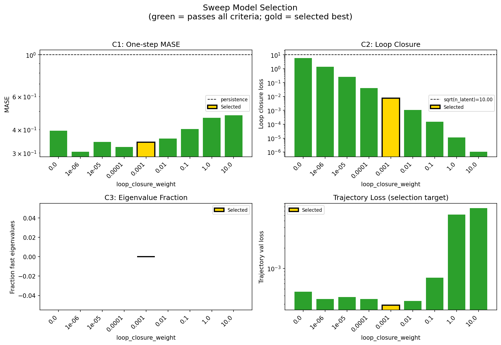
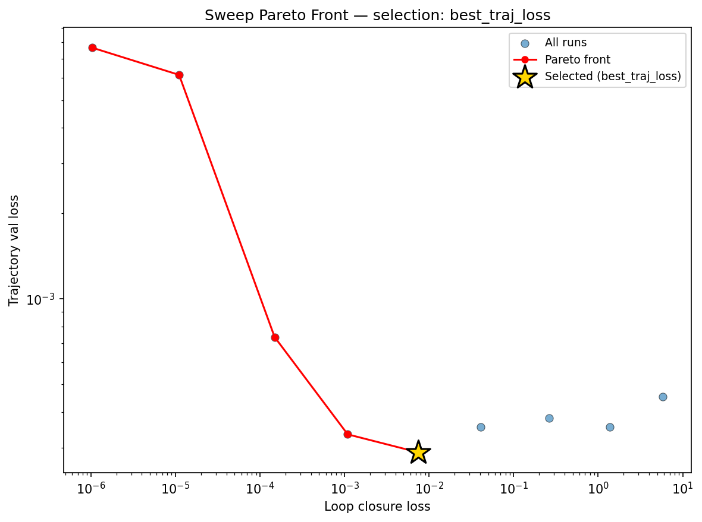
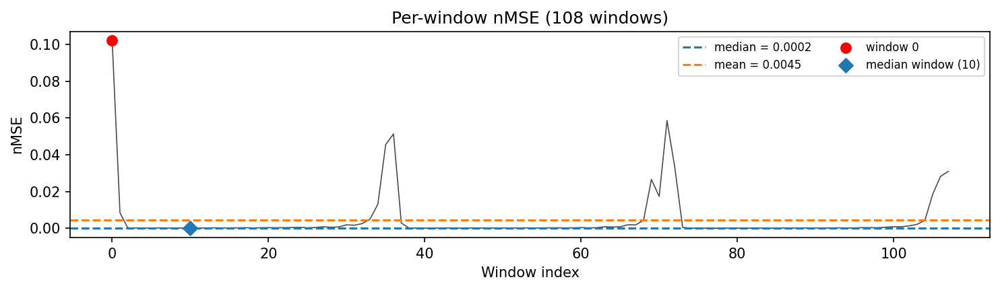
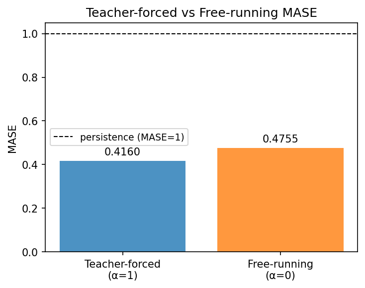
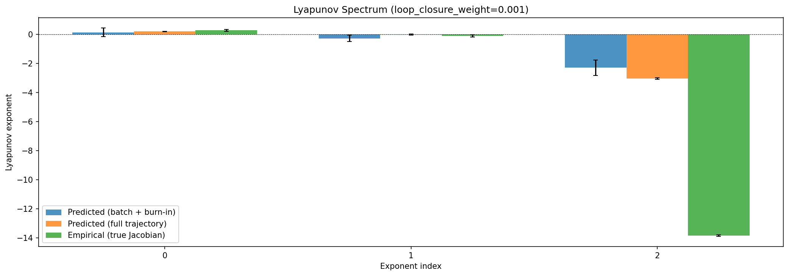
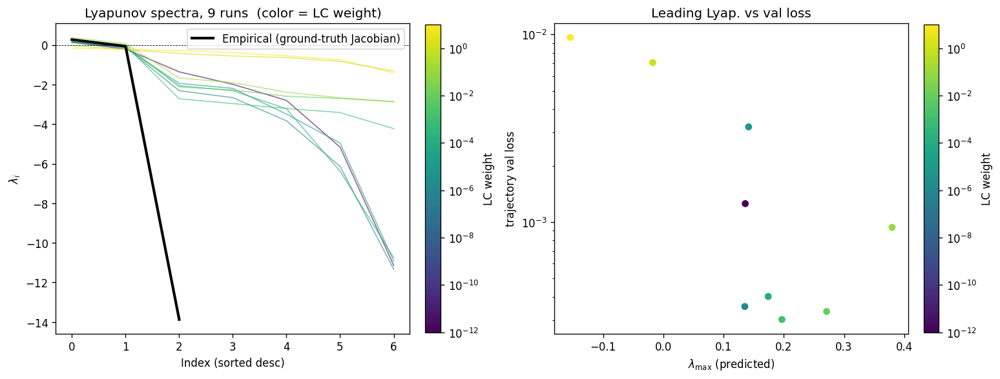
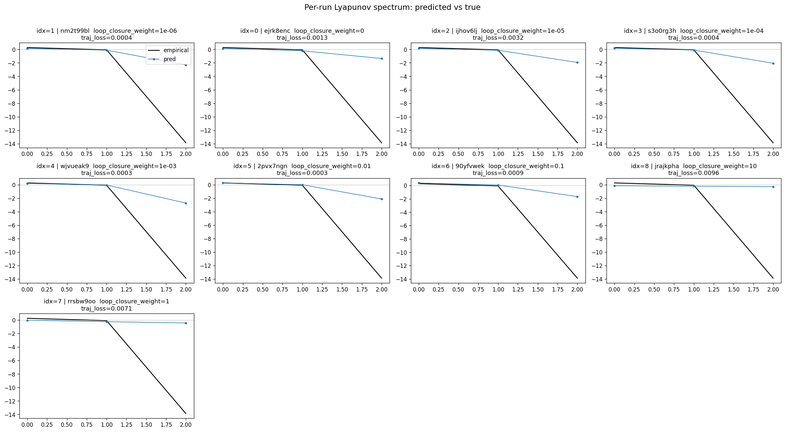
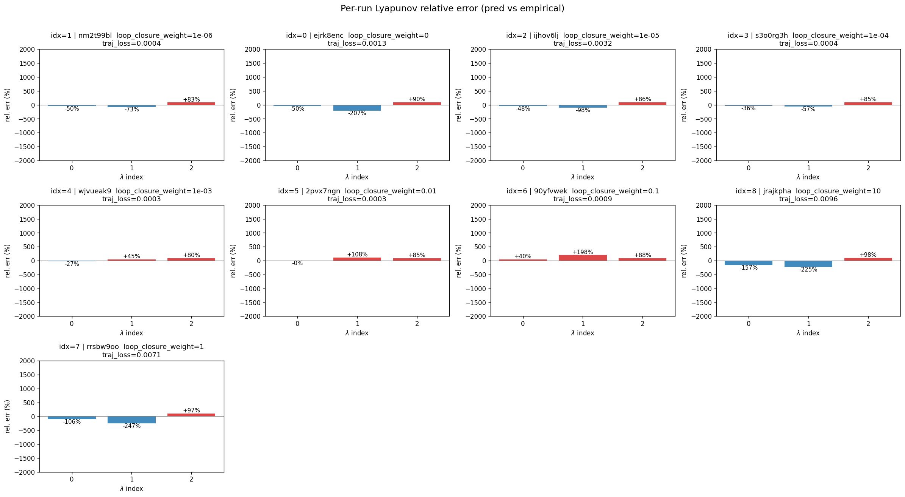
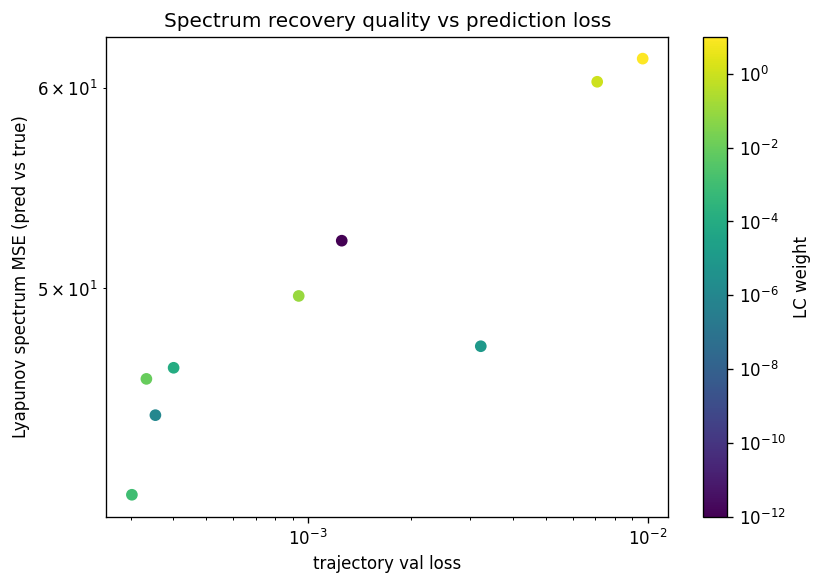

lorenz_partial_100d_7lat_additive_mse_uniform_p30__lc_sweepProject: Lorenz_INDpartial_N100_D1_NormTrue_T7__JacobianODE
Launched: 2026-04-15T15:47:20Z
Completed: 2026-04-16T02:20:13Z
Outcome: complete_clean
Git: latent-JacobianODE @ 325ada0
Expected runs: 9
lorenz_partial_100d_7lat_additive_mse_uniform_p30Description
Same as lorenz_partial_100d_7lat_additive_mse_p30 except reconstruction_mode='uniform' so training loss is scored on the full 100-D delay-embedded state (val monitor still most_recent).
Hypothesis
100→7 with most_recent recon under-contracted the spectrum (λ_min ≈ −6). Uniform recon forces z_dyn to be a proper Takens chart of the attractor rather than just enough to reconstruct the current frame, which should concentrate the real contraction into a single axis (λ closer to empirical ~−14) and make the extra transverse directions contract rapidly. Expected: best recovery of the stable spectrum across all Lorenz partial sweeps to date.
Success criteria
Overall best MASE: 0.3847 (LC weight = 1.0e-06, obs_noise_scale = 0.00) Overall best traj loss: 0.00035 at epoch 115.0 Runs analyzed: 9
obs_noise_scale| obs_noise_scale | Best LC weight | Best traj loss | MASE at best | R² | LC loss | epoch |
|---|---|---|---|---|---|---|
| 0.0 | 1.0e-03 | 0.00029 | 0.4231 | 0.9991 | 0.007 | 105.0 |
| Criterion | Verdict | Note |
|---|---|---|
| λ_min near empirical ~-14 at some LC | Unknown | |
| Σλ_i within ~30% of empirical ~-13.7 | Unknown | |
| val/trajectory_r2 > 0.9 at best LC | Pass | Best R² = 0.9989; threshold > 0.9 |
| No loop-closure explosion under uniform training | Unknown |
Automated verdicts use simple numeric-threshold parsing and may mis-classify qualitative criteria. The Discussion section below takes precedence.









(to be written)
run_analytics stdoutrun_analyticsNo run_id provided — selecting best run from group 'lorenz_partial_100d_7lat_additive_mse_uniform_p30__lc_sweep' ...
Found 9 total runs in JacobianODE/Lorenz_INDpartial_N100_D1_NormTrue_T7__JacobianODE (group=lorenz_partial_100d_7lat_additive_mse_uniform_p30__lc_sweep)
All runs (state, loop_closure_weight, tangent_entropy_weight, kl_dyn_weight):
nm2t99bl: state=finished, lc=1e-06, te=0.0, kl_dyn=0.0
ejrk8enc: state=finished, lc=0.0, te=0.0, kl_dyn=0.0
ijhov6lj: state=finished, lc=1e-05, te=0.0, kl_dyn=0.0
s3o0rg3h: state=finished, lc=0.0001, te=0.0, kl_dyn=0.0
wjvueak9: state=finished, lc=0.001, te=0.0, kl_dyn=0.0
2pvx7ngn: state=finished, lc=0.01, te=0.0, kl_dyn=0.0
90yfvwek: state=finished, lc=0.1, te=0.0, kl_dyn=0.0
jrajkpha: state=finished, lc=10.0, te=0.0, kl_dyn=0.0
rrsbw9oo: state=finished, lc=1.0, te=0.0, kl_dyn=0.0
slurm_timeout_min not found in any run config — falling back to 180 min
Including nm2t99bl (lc=1e-06): use_all_runs=True (state=finished)
Including ejrk8enc (lc=0.0): use_all_runs=True (state=finished)
Including ijhov6lj (lc=1e-05): use_all_runs=True (state=finished)
Including s3o0rg3h (lc=0.0001): use_all_runs=True (state=finished)
Including wjvueak9 (lc=0.001): use_all_runs=True (state=finished)
Including 2pvx7ngn (lc=0.01): use_all_runs=True (state=finished)
Including 90yfvwek (lc=0.1): use_all_runs=True (state=finished)
Including jrajkpha (lc=10.0): use_all_runs=True (state=finished)
Including rrsbw9oo (lc=1.0): use_all_runs=True (state=finished)
Found 9 effectively-done sweep runs:
loop_closure_weight=0.0, tangent_entropy_weight=0.0, kl_dyn_weight=0.0 -> run_id=ejrk8enc
loop_closure_weight=1e-06, tangent_entropy_weight=0.0, kl_dyn_weight=0.0 -> run_id=nm2t99bl
loop_closure_weight=1e-05, tangent_entropy_weight=0.0, kl_dyn_weight=0.0 -> run_id=ijhov6lj
loop_closure_weight=0.0001, tangent_entropy_weight=0.0, kl_dyn_weight=0.0 -> run_id=s3o0rg3h
loop_closure_weight=0.001, tangent_entropy_weight=0.0, kl_dyn_weight=0.0 -> run_id=wjvueak9
loop_closure_weight=0.01, tangent_entropy_weight=0.0, kl_dyn_weight=0.0 -> run_id=2pvx7ngn
loop_closure_weight=0.1, tangent_entropy_weight=0.0, kl_dyn_weight=0.0 -> run_id=90yfvwek
loop_closure_weight=1.0, tangent_entropy_weight=0.0, kl_dyn_weight=0.0 -> run_id=rrsbw9oo
loop_closure_weight=10.0, tangent_entropy_weight=0.0, kl_dyn_weight=0.0 -> run_id=jrajkpha
n_dims=100, n_latent=100, n_dyn=7, dt=0.0150
run=ejrk8enc: DiagnosticMetrics(one_step_mase=0.3939891755580902, loop_closure_loss=5.8523736000061035, fast_eigenvalue_fraction=0.0, trajectory_val_loss=0.00045378616778180003) (from W&B history)
run=nm2t99bl: DiagnosticMetrics(one_step_mase=0.30418330430984497, loop_closure_loss=1.3726403713226318, fast_eigenvalue_fraction=0.0, trajectory_val_loss=0.0003549623943399638) (from W&B history)
run=ijhov6lj: DiagnosticMetrics(one_step_mase=0.34294891357421875, loop_closure_loss=0.2624385356903076, fast_eigenvalue_fraction=0.0, trajectory_val_loss=0.00038046736153773963) (from W&B history)
run=s3o0rg3h: DiagnosticMetrics(one_step_mase=0.3234316408634186, loop_closure_loss=0.040838275104761124, fast_eigenvalue_fraction=0.0, trajectory_val_loss=0.00035408249823376536) (from W&B history)
run=wjvueak9: DiagnosticMetrics(one_step_mase=0.3427216708660126, loop_closure_loss=0.007480884902179241, fast_eigenvalue_fraction=0.0, trajectory_val_loss=0.0002885080757550895) (from W&B history)
run=2pvx7ngn: DiagnosticMetrics(one_step_mase=0.3579673171043396, loop_closure_loss=0.0010897256433963776, fast_eigenvalue_fraction=0.0, trajectory_val_loss=0.0003339405229780823) (from W&B history)
run=90yfvwek: DiagnosticMetrics(one_step_mase=0.40262487530708313, loop_closure_loss=0.0001488796842750162, fast_eigenvalue_fraction=0.0, trajectory_val_loss=0.0007343303877860308) (from W&B history)
run=rrsbw9oo: DiagnosticMetrics(one_step_mase=0.4614239037036896, loop_closure_loss=1.1032963811885566e-05, fast_eigenvalue_fraction=0.0, trajectory_val_loss=0.006140285171568394) (from W&B history)
run=jrajkpha: DiagnosticMetrics(one_step_mase=0.4762880504131317, loop_closure_loss=1.0337299727325444e-06, fast_eigenvalue_fraction=0.0, trajectory_val_loss=0.007653485983610153) (from W&B history)
Ranking method: best_traj_loss
Best run ID: wjvueak9
Best loop_closure_weight: 0.001
Best tangent_entropy_weight: 0.0
Best kl_dyn_weight: 0.0
Best traj loss: 0.000289
Criteria applied: ['C1', 'C2', 'C3']
Surviving: 9 / 9
Auto-selected run_id: wjvueak9
======================================================================
PARETO FRONTIER RUNS (5 runs)
======================================================================
Run ID LC Loss Traj Val Loss
------------ -------------- --------------
jrajkpha 0.000001 0.007653
rrsbw9oo 0.000011 0.006140
90yfvwek 0.000149 0.000734
2pvx7ngn 0.001090 0.000334
wjvueak9 0.007481 0.000289 <-- selected
======================================================================
RANKING METHOD COMPARISON (over 9 survivors)
======================================================================
Method Run ID LC Loss Traj Val Loss
---------------------- ------------ -------------- --------------
best_traj_loss wjvueak9 0.007481 0.000289 <-- active
pareto_knee rrsbw9oo 0.000011 0.006140
geo_rank wjvueak9 0.007481 0.000289
minimax_rank 2pvx7ngn 0.001090 0.000334
geo_log_score wjvueak9 0.007481 0.000289
minimax_log_score 90yfvwek 0.000149 0.000734
======================================================================
Loading run wjvueak9 from JacobianODE/Lorenz_INDpartial_N100_D1_NormTrue_T7__JacobianODE ...
Train dataset shape: torch.Size([23232, 45, 100])
Validation dataset shape: torch.Size([7392, 45, 100])
Test dataset shape: torch.Size([3168, 45, 100])
Train trajectories dataset shape: torch.Size([22, 1101, 100])
Validation trajectories dataset shape: torch.Size([7, 1101, 100])
Test trajectories dataset shape: torch.Size([3, 1101, 100])
Loading checkpoint epoch=105-step=21200.ckpt...
Computing MASE ...
Teacher-forced MASE: 0.4160
Free-running MASE: 0.4755
Computing Lyapunov exponents ...
Computing full-trajectory Lyapunov (3 test trajs, T=1101) ...
Predicted Lyapunov exponents (batch+burn-in, 128 windowed trajs):
λ_1 = +0.1325 ± 0.3017
λ_2 = -0.2804 ± 0.2243
λ_3 = -2.3010 ± 0.5323
λ_4 = -2.8840 ± 0.5599
λ_5 = -3.0698 ± 0.4903
λ_6 = -3.4350 ± 0.4706
λ_7 = -4.7732 ± 0.7812
Predicted Lyapunov exponents (full-length, 3 test trajs):
λ_1 = +0.1929 ± 0.0212
λ_2 = -0.0227 ± 0.0424
λ_3 = -3.0398 ± 0.0548
λ_4 = -3.2985 ± 0.0663
λ_5 = -3.3589 ± 0.0396
λ_6 = -3.5051 ± 0.0178
λ_7 = -4.6699 ± 0.1099
Empirical Lyapunov exponents (mean ± std):
λ_1 = +0.2716 ± 0.0605
λ_2 = -0.1016 ± 0.0797
λ_3 = -13.8370 ± 0.0514
Computing prediction windows ...
Windows: 108 — nMSE min=0.0001, median=0.0002, mean=0.0045, max=0.1021